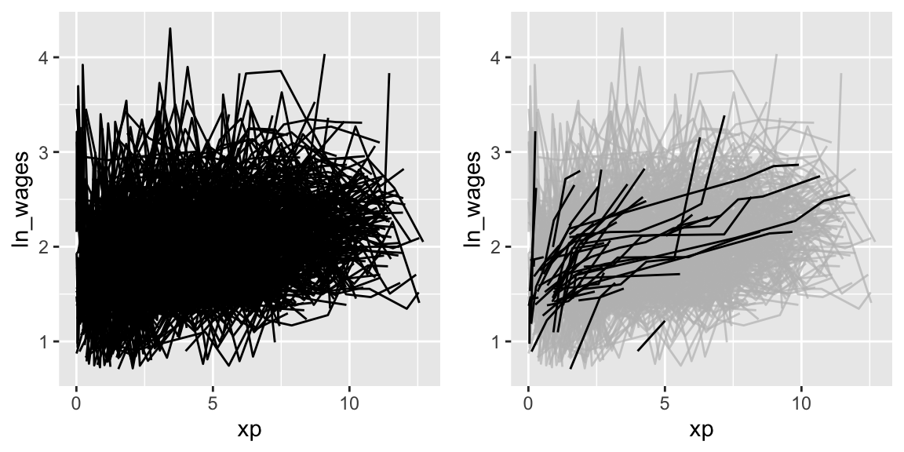
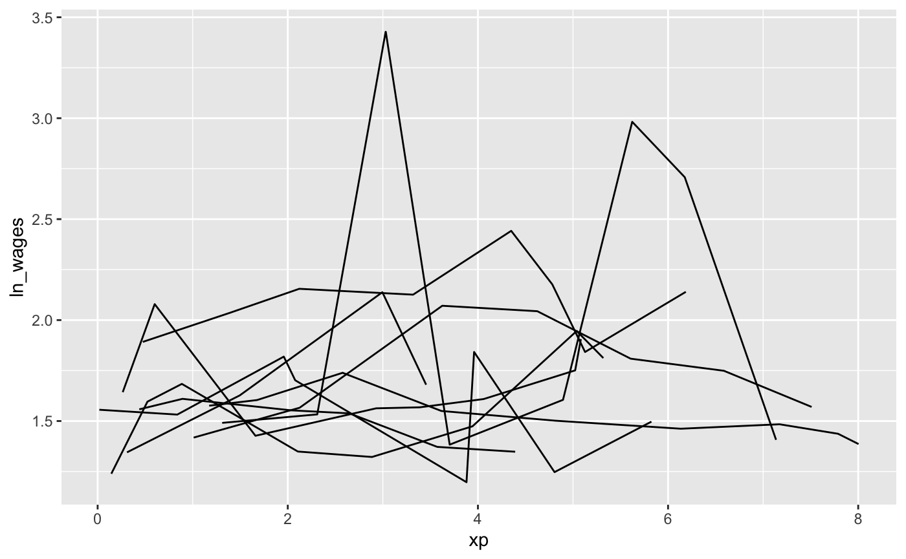
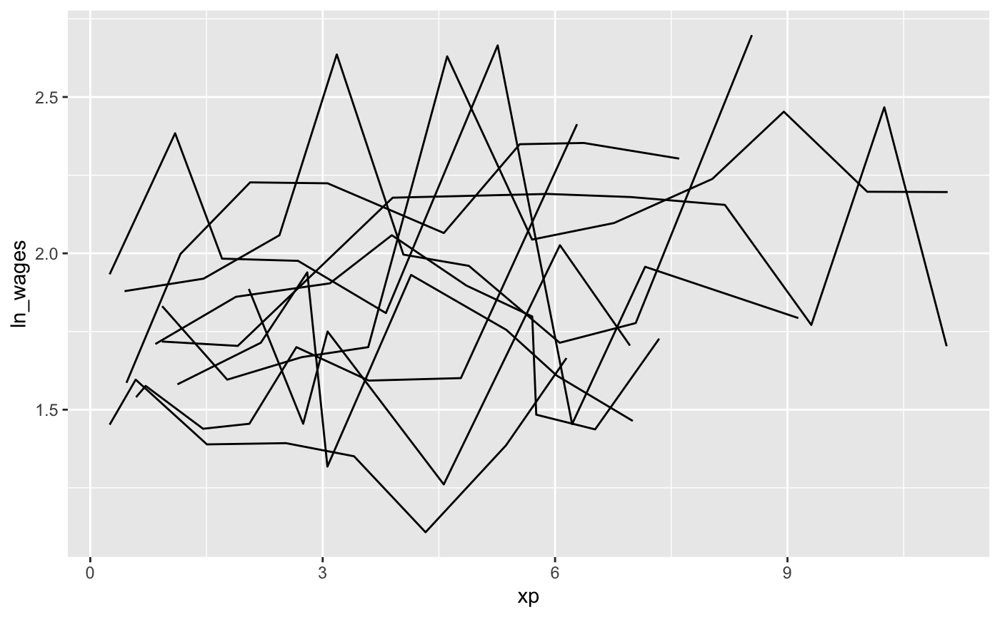
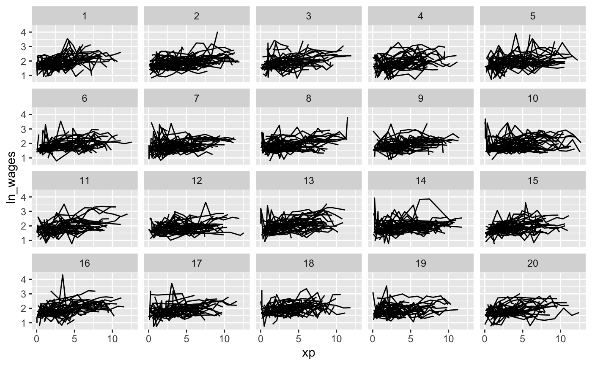
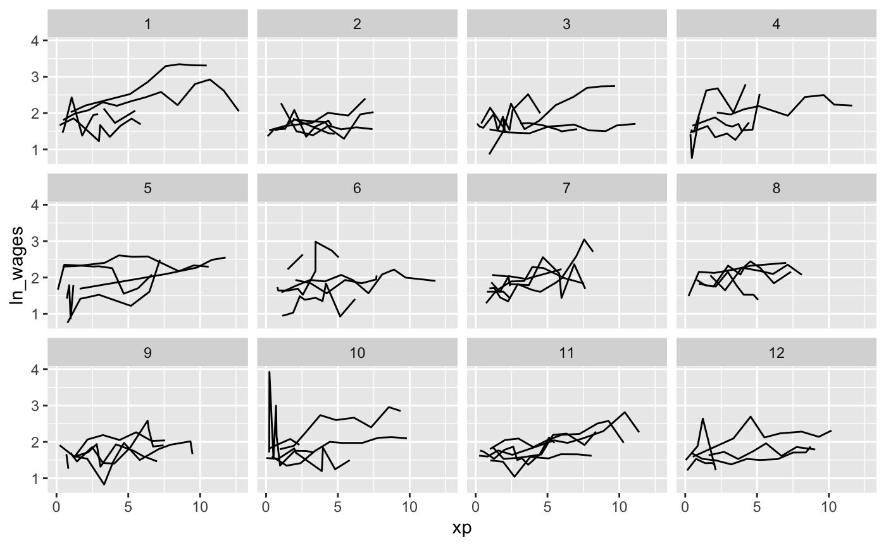
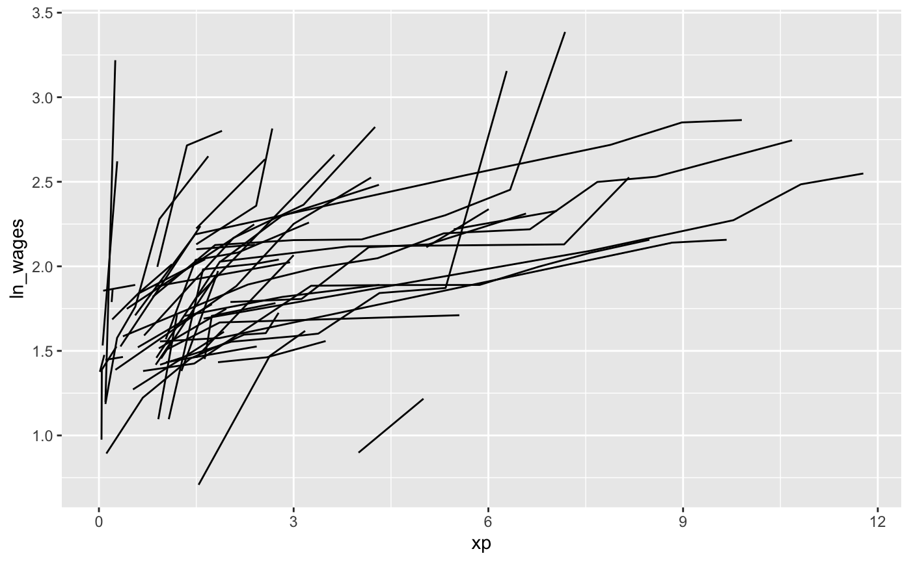
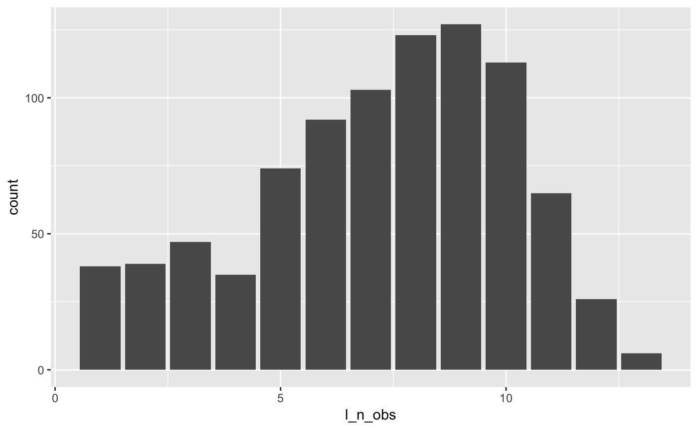
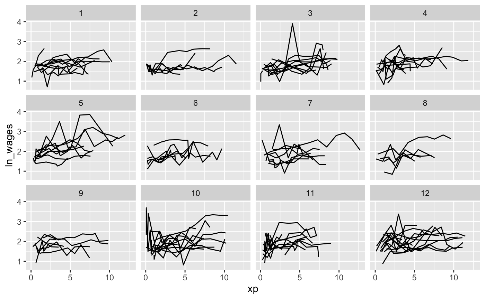

browse over longitudinal data graphically and analytically in R


Exploring longitudinal data can be challenging. For example, when there are many individuals it is difficult to look at all of them, as you often get a “plate of spaghetti” plot, with many lines plotted on top of each other.
library(brolgar)
library(ggplot2)
ggplot(wages,
aes(x = xp,
y = ln_wages,
group = id)) +
geom_line()
These are hard to interpret.
What you want is to identify those interesting individual lines, so you can get something like the following:

brolgar helps you browse over longitudinal data graphically and analytically in R, by providing tools to:
- Calculate features (summaries) for each individual series
- Efficiently explore your raw data
- Evaluate diagnostics of statistical models
Data in brolgar
To efficiently look at your longitudinal data, we assume it is a time series, with irregular time periods between measurements. This might seem strange, (that’s OK!), but there are two important things to remember:
- The key variable in your data is the identifier of your individuals or series.
- The index variable is the time component of your data.
Together, the index and key uniquely identify an observation.
The term key is used a lot in brolgar, so it is an important idea to internalise:
The key is the identifier of your individuals or series
So in the wages data, we have the following setup:
If you want to learn more about what longitudinal data as a time series, you can read more in the vignette, “Longitudinal Data Structures”
Efficiently exploring longitudinal data
To avoid staring at a plate of spaghetti, you can look at a random subset of the data. Brolgar provides some intuitive functions to help with this.
sample_n_keys()
In dplyr, you can use sample_n() to sample n observations. Similarly, with brolgar, you can take a random sample of n keys using sample_n_keys():
set.seed(2019-7-15-1300)
wages %>%
sample_n_keys(size = 10) %>%
ggplot(aes(x = xp,
y = ln_wages,
group = id)) +
geom_line()
Filtering observations
You can combine sample_n_keys() with add_n_obs() and filter() to only show keys with many observations:
set.seed(2019-7-15-1259)
library(dplyr)
wages %>%
add_n_obs() %>%
filter(n_obs > 5) %>%
sample_n_keys(size = 10) %>%
ggplot(aes(x = xp,
y = ln_wages,
group = id)) +
geom_line()
(Note: sample_frac_keys(), which samples a fraction of available keys.)
Now, how do you break these into many plots?
Clever facets: facet_strata()
brolgar provides some clever facets to help make it easier to explore your data. facet_strata() splits the data into 12 groups by default:
set.seed(2019-07-23-1936)
library(ggplot2)
ggplot(wages,
aes(x = xp,
y = ln_wages,
group = id)) +
geom_line() +
facet_strata()
But you could ask it to split the data into a more groups
set.seed(2019-07-25-1450)
library(ggplot2)
ggplot(wages,
aes(x = xp,
y = ln_wages,
group = id)) +
geom_line() +
facet_strata(n_strata = 20)
And what if you want to show only a few samples per facet?
Clever facets: facet_sample()
facet_sample() allows you to specify the number of keys per facet, and the number of facets with n_per_facet and n_facets. It splits the data into 12 facets with 5 per facet by default:
set.seed(2019-07-23-1937)
ggplot(wages,
aes(x = xp,
y = ln_wages,
group = id)) +
geom_line() +
facet_sample()
But you can specify your own number:
set.seed(2019-07-25-1527)
ggplot(wages,
aes(x = xp,
y = ln_wages,
group = id)) +
geom_line() +
facet_sample(n_per_facet = 3,
n_facets = 20)
Under the hood, facet_sample() and facet_strata() use sample_n_keys() and stratify_keys().
Finding features in longitudinal data
You can extract features of longitudinal data using the features function, from fablelite. You can, for example, calculate the minimum of a given variable for each key by providing a named list like so:
wages %>%
features(ln_wages,
list(min = min))
#> # A tibble: 888 x 2
#> id min
#> <int> <dbl>
#> 1 31 1.43
#> 2 36 1.80
#> 3 53 1.54
#> 4 122 0.763
#> 5 134 2.00
#> 6 145 1.48
#> 7 155 1.54
#> 8 173 1.56
#> 9 206 2.03
#> 10 207 1.58
#> # … with 878 more rowsbrolgar provides some sets of features, which start with feat_.
For example, the five number summary is feat_five_num:
wages %>%
features(ln_wages, feat_five_num)
#> # A tibble: 888 x 6
#> id min q25 med q75 max
#> <int> <dbl> <dbl> <dbl> <dbl> <dbl>
#> 1 31 1.43 1.48 1.73 2.02 2.13
#> 2 36 1.80 1.97 2.32 2.59 2.93
#> 3 53 1.54 1.58 1.71 1.89 3.24
#> 4 122 0.763 2.10 2.19 2.46 2.92
#> 5 134 2.00 2.28 2.36 2.79 2.93
#> 6 145 1.48 1.58 1.77 1.89 2.04
#> 7 155 1.54 1.83 2.22 2.44 2.64
#> 8 173 1.56 1.68 2.00 2.05 2.34
#> 9 206 2.03 2.07 2.30 2.45 2.48
#> 10 207 1.58 1.87 2.15 2.26 2.66
#> # … with 878 more rowsOr finding those whose values only increase or decrease with feat_monotonic
wages %>%
features(ln_wages, feat_monotonic)
#> # A tibble: 888 x 5
#> id increase decrease unvary monotonic
#> <int> <lgl> <lgl> <lgl> <lgl>
#> 1 31 FALSE FALSE FALSE FALSE
#> 2 36 FALSE FALSE FALSE FALSE
#> 3 53 FALSE FALSE FALSE FALSE
#> 4 122 FALSE FALSE FALSE FALSE
#> 5 134 FALSE FALSE FALSE FALSE
#> 6 145 FALSE FALSE FALSE FALSE
#> 7 155 FALSE FALSE FALSE FALSE
#> 8 173 FALSE FALSE FALSE FALSE
#> 9 206 TRUE FALSE FALSE TRUE
#> 10 207 FALSE FALSE FALSE FALSE
#> # … with 878 more rowsLinking individuals back to the data
You can join these features back to the data with left_join, like so:
wages %>%
features(ln_wages, feat_monotonic) %>%
left_join(wages, by = "id") %>%
ggplot(aes(x = xp,
y = ln_wages,
group = id)) +
geom_line() +
gghighlight(increase)
Other helper functions
n_obs()
We can calculate the number of observations total using n_obs():
And the number of observations for each key using n_keys():
You can also use n_obs() inside features to return the number of observations:
wages %>%
features(id, n_obs)
#> # A tibble: 888 x 2
#> id n_obs
#> <int> <int>
#> 1 31 8
#> 2 36 10
#> 3 53 8
#> 4 122 10
#> 5 134 12
#> 6 145 9
#> 7 155 11
#> 8 173 6
#> 9 206 3
#> 10 207 11
#> # … with 878 more rowsThis returns a dataframe, with one row per key, and the number of observations for each key.
This could be further summarised to get a sense of the patterns of the number of observations:

add_n_obs()
You can add information about the number of observations for each key with add_n_obs():
wages %>% add_n_obs()
#> # A tsibble: 6,402 x 10 [!]
#> # Key: id [888]
#> id xp n_obs ln_wages ged xp_since_ged black hispanic high_grade
#> <int> <dbl> <int> <dbl> <int> <dbl> <int> <int> <int>
#> 1 31 0.015 8 1.49 1 0.015 0 1 8
#> 2 31 0.715 8 1.43 1 0.715 0 1 8
#> 3 31 1.73 8 1.47 1 1.73 0 1 8
#> 4 31 2.77 8 1.75 1 2.77 0 1 8
#> 5 31 3.93 8 1.93 1 3.93 0 1 8
#> 6 31 4.95 8 1.71 1 4.95 0 1 8
#> 7 31 5.96 8 2.09 1 5.96 0 1 8
#> 8 31 6.98 8 2.13 1 6.98 0 1 8
#> 9 36 0.315 10 1.98 1 0.315 0 0 9
#> 10 36 0.983 10 1.80 1 0.983 0 0 9
#> # … with 6,392 more rows, and 1 more variable: unemploy_rate <dbl>Which you can then use to filter observations:
wages %>%
add_n_obs() %>%
filter(n_obs > 3)
#> # A tsibble: 6,145 x 10 [!]
#> # Key: id [764]
#> id xp n_obs ln_wages ged xp_since_ged black hispanic high_grade
#> <int> <dbl> <int> <dbl> <int> <dbl> <int> <int> <int>
#> 1 31 0.015 8 1.49 1 0.015 0 1 8
#> 2 31 0.715 8 1.43 1 0.715 0 1 8
#> 3 31 1.73 8 1.47 1 1.73 0 1 8
#> 4 31 2.77 8 1.75 1 2.77 0 1 8
#> 5 31 3.93 8 1.93 1 3.93 0 1 8
#> 6 31 4.95 8 1.71 1 4.95 0 1 8
#> 7 31 5.96 8 2.09 1 5.96 0 1 8
#> 8 31 6.98 8 2.13 1 6.98 0 1 8
#> 9 36 0.315 10 1.98 1 0.315 0 0 9
#> 10 36 0.983 10 1.80 1 0.983 0 0 9
#> # … with 6,135 more rows, and 1 more variable: unemploy_rate <dbl>
stratify_keys()
To look at as much of the raw data as possible, it can be helpful to stratify the data into groups for plotting. You can stratify the keys using the stratify_keys() function, which adds the column, .strata:
wages %>%
sample_n_keys(100) %>%
stratify_keys(n_strata = 10)
#> # A tsibble: 677 x 10 [!]
#> # Key: id [100]
#> id ln_wages xp ged xp_since_ged black hispanic high_grade
#> <int> <dbl> <dbl> <int> <dbl> <int> <int> <int>
#> 1 122 2.12 2.04 0 0 0 0 12
#> 2 122 2.92 2.64 0 0 0 0 12
#> 3 122 1.92 3.66 0 0 0 0 12
#> 4 122 0.763 4.64 0 0 0 0 12
#> 5 122 2.44 5.83 0 0 0 0 12
#> 6 122 2.18 6.72 0 0 0 0 12
#> 7 122 2.14 8.16 0 0 0 0 12
#> 8 122 2.20 9.1 0 0 0 0 12
#> 9 122 2.34 10.4 0 0 0 0 12
#> 10 122 2.67 11.1 0 0 0 0 12
#> # … with 667 more rows, and 2 more variables: unemploy_rate <dbl>,
#> # .strata <int>This then allows the user to create facetted plots showing a lot more of the raw data.
set.seed(2019-07-15-1258)
wages %>%
sample_n_keys(120) %>%
stratify_keys(n_strata = 12) %>%
ggplot(aes(x = xp,
y = ln_wages,
group = id)) +
geom_line() +
facet_wrap(~.strata)
This is what powers facet_strata() under the hood.
Exploratory modelling
It can be useful to fit a model to explore your data. One technique is to fit a linear model for each group in a dataset. For example, you could fit a linear model for each key in the data.
brolgar provides a simple helper function to help with this, called key_slope().
key_slope() returns the intercept and slope estimate for each key, given a linear model formula. We can get the number of observations, and slope information for each individual to identify those that are decreasing over time.
key_slope(wages,ln_wages ~ xp)
#> # A tibble: 888 x 3
#> id .intercept .slope_xp
#> <int> <dbl> <dbl>
#> 1 31 1.41 0.101
#> 2 36 2.04 0.0588
#> 3 53 2.29 -0.358
#> 4 122 1.93 0.0374
#> 5 134 2.03 0.0831
#> 6 145 1.59 0.0469
#> 7 155 1.66 0.0867
#> 8 173 1.61 0.100
#> 9 206 1.73 0.180
#> 10 207 1.62 0.0884
#> # … with 878 more rowsWe can then join these summaries back to the data:
library(dplyr)
wages_slope <- key_slope(wages,ln_wages ~ xp) %>%
left_join(wages, by = "id")
wages_slope
#> # A tibble: 6,402 x 11
#> id .intercept .slope_xp ln_wages xp ged xp_since_ged black
#> <int> <dbl> <dbl> <dbl> <dbl> <int> <dbl> <int>
#> 1 31 1.41 0.101 1.49 0.015 1 0.015 0
#> 2 31 1.41 0.101 1.43 0.715 1 0.715 0
#> 3 31 1.41 0.101 1.47 1.73 1 1.73 0
#> 4 31 1.41 0.101 1.75 2.77 1 2.77 0
#> 5 31 1.41 0.101 1.93 3.93 1 3.93 0
#> 6 31 1.41 0.101 1.71 4.95 1 4.95 0
#> 7 31 1.41 0.101 2.09 5.96 1 5.96 0
#> 8 31 1.41 0.101 2.13 6.98 1 6.98 0
#> 9 36 2.04 0.0588 1.98 0.315 1 0.315 0
#> 10 36 2.04 0.0588 1.80 0.983 1 0.983 0
#> # … with 6,392 more rows, and 3 more variables: hispanic <int>,
#> # high_grade <int>, unemploy_rate <dbl>And highlight those individuals with a negative slope using gghighlight:
library(gghighlight)
wages_slope %>%
as_tibble() %>% # workaround for gghighlight + tsibble
ggplot(aes(x = xp,
y = ln_wages,
group = id)) +
geom_line() +
gghighlight(.slope_xp < 0)
Find keys near other summaries with keys_near()
We might want to further summarise our exploratory modelling by finding those slopes that are near a five number summary values:
summary(wages_slope$.slope_xp)
#> Min. 1st Qu. Median Mean 3rd Qu. Max. NA's
#> -4.57692 -0.00189 0.04519 0.04490 0.08458 13.21569 38Finding those groups that are near these values can be surprisingly challenging!
brolgar makes it easier by providing the keys_near() function. You tell it what the key is, what variable you want to summarse by, and then by default it returns those keys near the five number summary. Let’s return the keys near the .slope_xp:
wages_slope %>%
keys_near(key = id,
var = .slope_xp)
#> # A tibble: 31 x 5
#> # Groups: stat [5]
#> id .slope_xp stat stat_value stat_diff
#> <int> <dbl> <chr> <dbl> <dbl>
#> 1 7918 -4.58 min -4.58 0
#> 2 7918 -4.58 min -4.58 0
#> 3 7918 -4.58 min -4.58 0
#> 4 2092 -0.00189 q25 -0.00189 0
#> 5 2092 -0.00189 q25 -0.00189 0
#> 6 2092 -0.00189 q25 -0.00189 0
#> 7 2092 -0.00189 q25 -0.00189 0
#> 8 2092 -0.00189 q25 -0.00189 0
#> 9 2092 -0.00189 q25 -0.00189 0
#> 10 6863 0.0452 med 0.0452 0
#> # … with 21 more rowsHere it returns the id, the .slope_xp, and the statistic that it was closest to, and what the difference between the slope_xp and the statistic.
You can visualise these summary keys by joining them back to the data:
wages_slope %>%
keys_near(key = id,
var = .slope_xp) %>%
left_join(wages, by = "id") %>%
ggplot(aes(x = xp,
y = ln_wages,
group = id,
colour = stat)) +
geom_line()
You can read more about keys_near() at the finding summary keys vignette.
Contributing
Please note that the brolgar project is released with a Contributor Code of Conduct. By contributing to this project, you agree to abide by its terms.
A Note on the API
This version of brolgar was been forked from tprvan/brolgar, and has undergone breaking changes to the API.